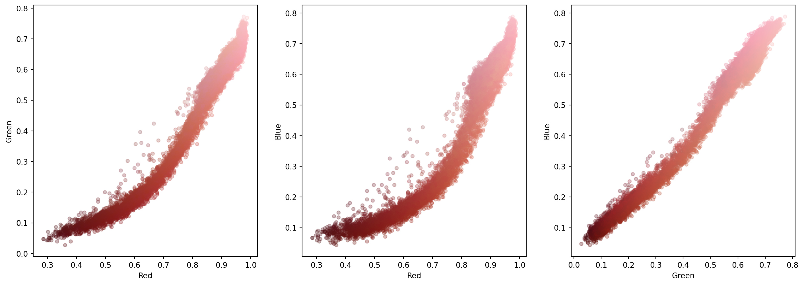
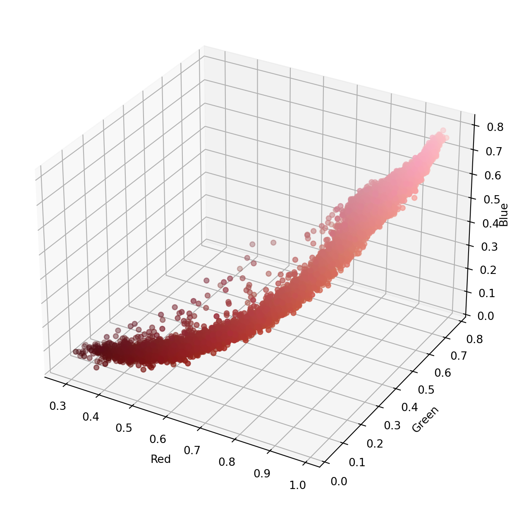
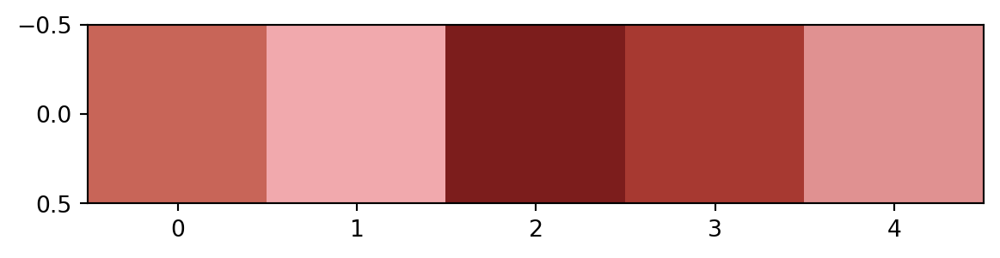
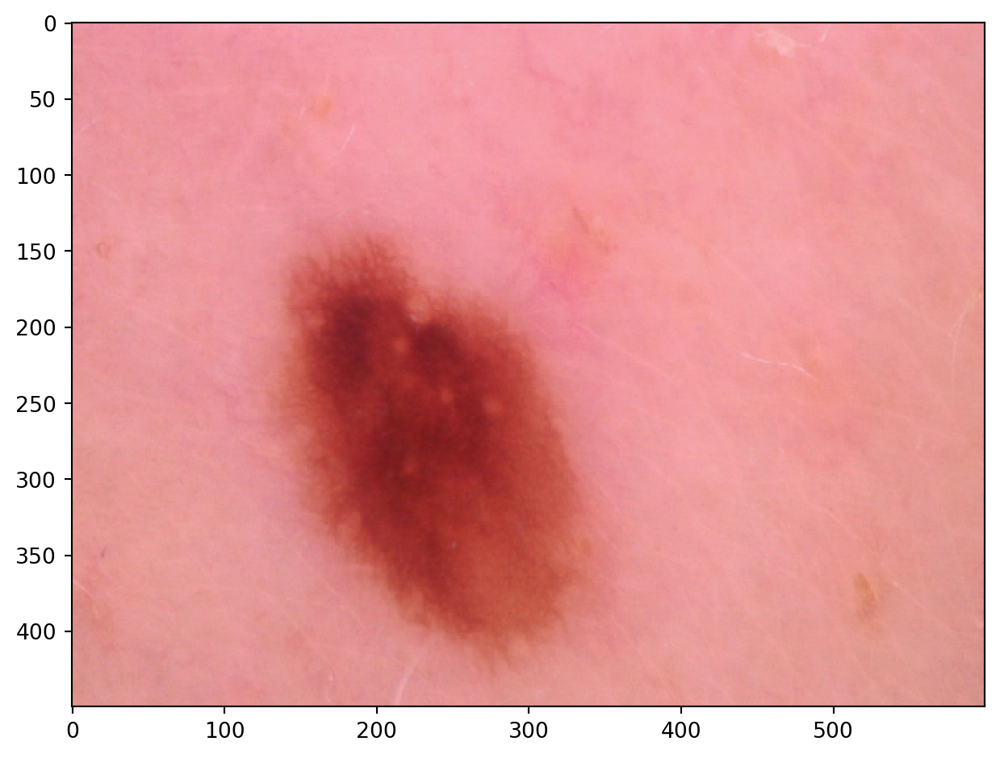
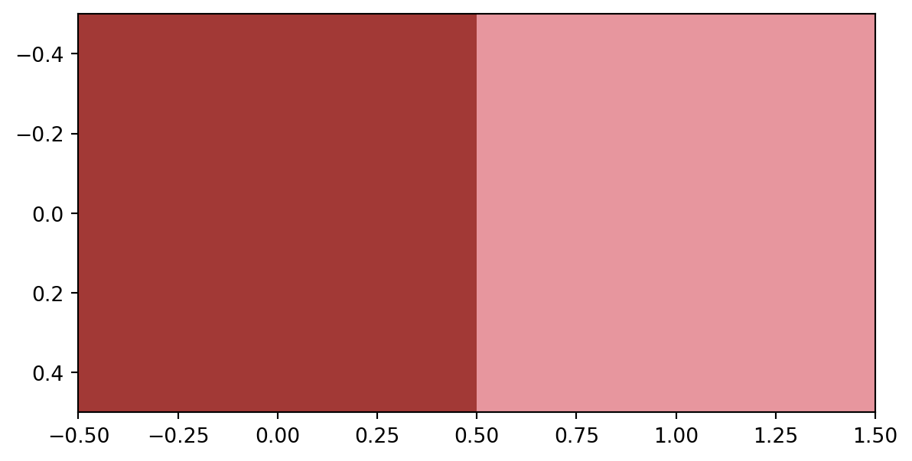
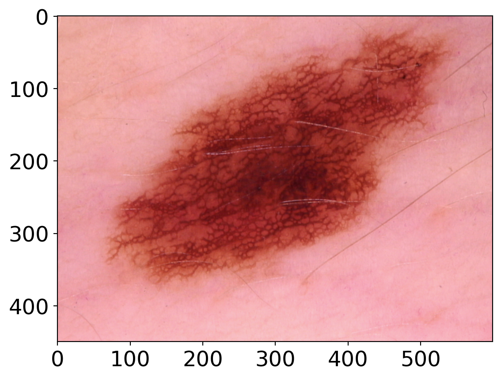

To teach the concept of image clustering for analysis of medical images using a publicly available data set. The course will introduce ideas on data optimisation techniques with a focus on data augmentation, to improve machine learning in small imaging datasets.
Pre-requisites
You need to have scikit-image library installed to run this practical. If you are using Anaconda the recommended way to install it is with
Machine learning can be used on images as well as numerical data. One method is clustering. Clustering is a form of unsupervised learning in which you separate a large set of data into smaller groups based on distances between them. In terms of images, clustering can be used to reduce the number of colours used in an image.
In this exercise we will demonstrate how clustering can be used to measure the size of different dermatological features.
Let’s start by loading our first image from our directory and examining it’s features:
from PIL import Imageimport numpy as npfrom skimage import ioimport matplotlib.pyplot as plt# Make sure to specify your own working directoryimg_handle = Image.open("extra/data/mole.jpg") # We need to first convert the image to a numpy array to ensure we can specify its dimensions img = np.array(img_handle)print('Shape is', img.shape)print("Size is", img.size)
Shape is (450, 600, 3)
Size is 810000
io.imshow(img)plt.show()
/var/folders/bq/2w1p57q54r78thfjpfy2cbrc0000gp/T/ipykernel_12774/1806673016.py:1: FutureWarning:
`imshow` is deprecated since version 0.25 and will be removed in version 0.27. Please use `matplotlib`, `napari`, etc. to visualize images.
At the moment, the image is in 3 dimensions: 450 (height) x 600 (width) x 3 (colour). Color is 3 corresponding to RGB (red, green, blue). We want to flatten the image to two dimensional array (pixel x colour).
We then want to put this into a pandas data frame for better plotting and processing. The data frame will have four columns: Red, Green, Blue and Colour - indicating the hex code of the pixel.
img = np.array(img, dtype=np.float64) /255# Scale valuesw, h, d = original_shape =tuple(img.shape) # Get the current shapeimg_array = np.reshape(img, (w * h, d)) # Reshape to to 2D#put into pandas data frame from pandas import DataFramepixels = DataFrame(img_array, columns=["Red", "Green", "Blue"])from matplotlib import colorspixels["colour"] = [colors.to_hex(p) for p in img_array]print(pixels)
It is useful to plot the data before running the clustering.
Since we have a high amount of pixels (810000) running the algorithm may be slow. Therefore we can run it over a small subset of data.
pixels_sample = pixels.sample(frac=0.05) #look at 5% of the data
Since RGB pixels are a 3D dataset, we will plot three 2D plots of the pairs red/green, red/blue and green/blue.
To make our lives easier, we can define a function plot_colours() which will plot the three pairs of columns against each other. To make the plots visually useful we will also colour each point in the plot with the colour of the pixel it came from using our fourth column, ‘Colour’.
def plot_colours(df, c1, c2, c3):""" Given a DataFrame and three column names, plot the pairs against each other """ fig, ax = plt.subplots(1, 3) fig.set_size_inches(18, 6) df.plot.scatter(c1, c2, c=df["colour"], alpha=0.3, ax=ax[0]) df.plot.scatter(c1, c3, c=df["colour"], alpha=0.3, ax=ax[1]) df.plot.scatter(c2, c3, c=df["colour"], alpha=0.3, ax=ax[2])plot_colours(pixels_sample, "Red", "Green", "Blue")plt.show()

The 1st plot: Red vs green, represents a non-linear relationship between red and green, red increases and green increases at a different rate.
The 2nd plot: Red vs blue, a curved upward trend where red values have higher blue values. However, the spread is more eminent at lower levels of red intensity.
The 3rd plot: Green vs blue, a curved relationship with strong positive correlation with limited spread. Meaning as green increases blue increases.
Overall this shows we have a strong correlation between colour channels and the colours are highly dependent as shown by high correlation.
Sometimes viewing the data in 3D can help since planar projections can lose some nuances of the data. We can display 3D plots using the mplot3d package.
from mpl_toolkits import mplot3dfig = plt.figure(figsize=(10,8))ax = plt.axes(projection='3d')ax.set_xlabel("Red")ax.set_ylabel("Green")ax.set_zlabel("Blue",labelpad=-2,rotation=90) # Rotate the z-axis label to fitax.scatter(pixels_sample["Red"], pixels_sample["Green"], pixels_sample["Blue"], c=pixels_sample["colour"])plt.show()

Assigning points to clusters
Now we can begin the clustering. We will be using a method called k-means clustering. It works by initialising K cluster centres, assigning each data point (pixel in this case) to the nearest centre. It then works through the data set, assigning each pixel and updating the clusters if needed. The process continues until no more updates to the clusters are required.
We can run the clustering and display our cluster centres using the code below:
from sklearn.cluster import KMeanskmeans = KMeans(n_clusters=5, n_init="auto").fit(pixels_sample[["Red", "Green", "Blue"]])plt.imshow([kmeans.cluster_centers_])plt.show()

Now we have our clusters which we can use as our representative clusters for the image. We can now go through the original image and assign each pixel to a cluster that it is nearest to.
Here it has done a pretty good job at identifying the main darker spots, but finer features such as hair are undefined. We could try to improve this by increasing the number of clusters.
What number of clusters do you think are sufficient to define all features?
Set the number of clusters to 2. Does this sufficiently distinguish between mole and not mole?
Optional Exercise
Take a look at this other image clustering exercise. It explains different methods for colouring space. Have a go at using and comparing the different methods.
Clustering Multiple Images
In the next step we are going to use this clustering technique to measure the surface area of dermatological features in a set of 3 images. This could be used as a technique to measure features in a large data set that are hard or tedious to quantify.
First we need to load and inspect the images in the same way we did in the previous exercise
from PIL import Imageimport numpy as npfrom skimage import ioimport matplotlib.pyplot as plt#image 1img1 = Image.open("extra/data/mole.jpg") #make sure to specify your own working directoryimg1 = np.array(img1)print('Image 1 shape is', img1.shape)print("Image 1 size is", img1.size)io.imshow(img1)plt.show()#image 2img2 = Image.open("extra/data/mole2.jpg") #make sure to specify your own working directoryimg2 = np.array(img2)print('Image 2 shape is', img2.shape)print("Image 2 size is", img2.size)io.imshow(img2)plt.show()#image 3img3 = Image.open("extra/data/mole3.jpg") #make sure to specify your own working directoryimg3 = np.array(img3)print('Image 3 shape is', img3.shape)print("Image 3 size is", img3.size)io.imshow(img3)plt.show()
Image 1 shape is (450, 600, 3)
Image 1 size is 810000
/var/folders/bq/2w1p57q54r78thfjpfy2cbrc0000gp/T/ipykernel_12774/795262317.py:12: FutureWarning:
`imshow` is deprecated since version 0.25 and will be removed in version 0.27. Please use `matplotlib`, `napari`, etc. to visualize images.
Image 2 shape is (450, 600, 3)
Image 2 size is 810000
/var/folders/bq/2w1p57q54r78thfjpfy2cbrc0000gp/T/ipykernel_12774/795262317.py:21: FutureWarning:
`imshow` is deprecated since version 0.25 and will be removed in version 0.27. Please use `matplotlib`, `napari`, etc. to visualize images.
Image 3 shape is (450, 600, 3)
Image 3 size is 810000
/var/folders/bq/2w1p57q54r78thfjpfy2cbrc0000gp/T/ipykernel_12774/795262317.py:30: FutureWarning:
`imshow` is deprecated since version 0.25 and will be removed in version 0.27. Please use `matplotlib`, `napari`, etc. to visualize images.

We also need to flatten them and convert into a pandas data frames
from pandas import DataFramefrom matplotlib import colors#image 1img1 = np.array(img1, dtype=np.float64) /255# Scale valuesw, h, d = original_shape =tuple(img1.shape) # Get the current shapeimg1_array = np.reshape(img1, (w * h, d)) # Reshape to to 2Dpixels1 = DataFrame(img1_array, columns=["Red", "Green", "Blue"]) #convert to pandaspixels1["colour"] = [colors.to_hex(p) for p in img1_array] #add colours column print(pixels1)#image 2img2 = np.array(img2, dtype=np.float64) /255# Scale valuesw, h, d = original_shape =tuple(img2.shape) # Get the current shapeimg2_array = np.reshape(img2, (w * h, d)) # Reshape to to 2Dpixels2 = DataFrame(img2_array, columns=["Red", "Green", "Blue"]) #convert to pandaspixels2["colour"] = [colors.to_hex(p) for p in img2_array] #add colours column print(pixels2)#image 3img3 = np.array(img3, dtype=np.float64) /255# Scale valuesw, h, d = original_shape =tuple(img3.shape) # Get the current shapeimg3_array = np.reshape(img3, (w * h, d)) # Reshape to to 2Dpixels3 = DataFrame(img3_array, columns=["Red", "Green", "Blue"]) #convert to pandaspixels3["colour"] = [colors.to_hex(p) for p in img3_array] #add colours column print(pixels3)
At the moment we are loading and editing each image seperately - this can be time consuming with large data sets. How can we make this process faster?
Answer
import os# Set a directory variable name containing imagesimage_dir ="extra/data"# List all image files in the directoryimage_files = [fileforfilein os.listdir(image_dir) iffile.endswith((".jpg", ".png", ".jpeg"))]print(f'These are the image file names in the current working directory: {image_files}') # View file names# Loop through imagesforfilein image_files: img_path = os.path.join(image_dir, file) img = io.imread(img_path) # Load the image# Normalize pixel values (scale between 0 and 1) img = np.array(img, dtype=np.float64) /255# Get the shape of the image w, h, d = img.shape # Reshape into a 2D array of pixels img_array = np.reshape(img, (w * h, d)) # Convert to a Pandas DataFrame pixels = DataFrame(img_array, columns=["Red", "Green", "Blue"]) pixels["colour"] = [colors.to_hex(p) for p in img_array] # Convert RGB to HEX colorsprint(pixels.head())
These are the image file names in the current working directory: ['mole2.jpg', 'mole3.jpg', 'mole.jpg']
Red Green Blue colour
0 0.890196 0.560784 0.650980 #e38fa6
1 0.894118 0.564706 0.654902 #e490a7
2 0.886275 0.556863 0.647059 #e28ea5
3 0.874510 0.564706 0.639216 #df90a3
4 0.878431 0.568627 0.654902 #e091a7
Red Green Blue colour
0 0.905882 0.576471 0.627451 #e793a0
1 0.913725 0.592157 0.639216 #e997a3
2 0.913725 0.592157 0.639216 #e997a3
3 0.925490 0.596078 0.647059 #ec98a5
4 0.925490 0.596078 0.647059 #ec98a5
Red Green Blue colour
0 0.949020 0.662745 0.698039 #f2a9b2
1 0.964706 0.678431 0.713725 #f6adb6
2 0.964706 0.678431 0.713725 #f6adb6
3 0.964706 0.686275 0.717647 #f6afb7
4 0.968627 0.690196 0.705882 #f7b0b4
To run the clustering on a set of images we need to stack the data frames into one. We will add a new column to indicate which image the data came from.
# First we need to add a new column to our data sets to indicate which image they came from import pandas as pdpixels1['image'] ='1'pixels2['image'] ='2'pixels3['image'] ='3'pixels = pd.concat([pixels1, pixels2, pixels3], ignore_index =True, axis =0) #axis 0 indicates stacking verticalluprint(pixels)
Explore the data in the same way as the previous exercise. Do you notice anything from the correlations?
We can now run K-means clustering in the same way as before. First by sampling a subset of pixels and assign our cluster centres. In order to compare the size of the dermatological features across the images, we want to measure the pixels that are and aren’t dark space. We could try to use 2 clusters for this.
pixels_sample = pixels.sample(frac=0.05) #look at 5% of the datafrom sklearn.cluster import KMeanskmeans = KMeans(n_clusters=2, n_init="auto").fit(pixels_sample[["Red", "Green", "Blue"]])plt.imshow([kmeans.cluster_centers_])plt.show()

We can now run our clustering with our whole data set.
Now we have used the clustering algorithm to cluster pixels into dark and light areas, we can manipulate our data frame to compare the size of the features in the images.
First we want to add the clustering array to the pandas data frame
# Add the clustering array as a new column pixels['cluster'] = labels.tolist()print(pixels)
We can then plot the amount of dark space for each image
# Filter only rows where cluster == 0pixels_fil = pixels[pixels["cluster"] ==1]# Count occurrences of cluster 0 per imagedark_counts= pixels_fil["image"].value_counts()# Plot the bar chartplt.figure(figsize=(8, 5))dark_counts.plot(kind="bar")plt.show()
In a real data set we would have lots of different images. Using clustering this way would save time in measuring images. Can you think of other applications relevant to your research?
Data augmentation
We are moving on to a different aspect of clustering images addressing the problem of limited image data.
Mostly we have access to limited medical image data. This amount of data is insufficient to train a machine learning algorithm that is good enough to decipher between diseased and not diseased. Therefore, we will explore alternative strategies of creating more data from existing dataset to boost model performance.
Data augmentation is a technique of artificially increasing the training set by creating modified copies of a dataset using existing data. It is aimed at creating new data points, manipulating existing data to increase the size and diversity of a dataset. An example use case is in image analysis for health care where it helps improve diagnostic models that detect, recognize, and diagnose diseases based on images. The creation of an augmented image provides more training data for models, especially for rare diseases that lack source data variations. The production and use of synthetic patient data advances medical research while respecting all data privacy considerations.
Why is data augmentation important?
Enhanced Model performance.
Data augmentation techniques help enrich datasets by creating many variations of existing data. This provides a larger dataset for training and enables a model to encounter more diverse features. The augmented data helps the model better generalize to unseen data and improve its overall performance in real-world environments.
To prevent models from overfitting.
Overfitting is the undesirable ML behavior where a model can accurately provide predictions for training data but it struggles with new data. If a model trains only with a narrow dataset, it can become overfit and can give predictions related to only that specific data type.
The initial training set is too small.
To improve the model accuracy.
If you need to train a deep learning model on sensitive data, you can use augmentation techniques on the existing data to create synthetic data.
To reduce the operational cost of labeling and cleaning the raw dataset.
Data augmentation techniques increase the effectiveness of smaller datasets, vastly reducing the dependency on large datasets in training environments.
How do you achieve Image data augmentation?
In image processing, applying geomteric transformations like rotations, flips, or color adjustments to existing images can help models generalize better.
Other transformations are:
Color space transformations: randomly change RGB color channels, contrast, and brightness.
Kernel filters: randomly change the sharpness or blurring of the image.
Random erasing: delete some part of the initial image.
Mixing images: blending and mixing multiple images.
Geometric Transformations
In this session we will focus on geometric transformations only including: rotating images, flipping and blurring the images.
# Load the necessary librariesimport skimageimport matplotlib.pyplot as pltimport matplotlibimport numpy as npfrom skimage import data ## Inbuilt dataset within scikit-imagefrom skimage import io, transform, filters, exposurematplotlib.rcParams['font.size'] =18
# We are working with one file at a time for now.# Read in the image dataimage = io.imread("extra/data/mole.jpg")
# Flip the image horizontallyflipped_h = image[:, ::-1]plt.imshow(flipped_h)
Flip the image vertically
flipped_v = image[::-1, :] plt.imshow(flipped_v)

Blur the image
# Blur the imageblurred = filters.gaussian(image, sigma=2)plt.imshow(blurred)
Visualise all images including the original image
# Visualise the original and modified forms of the image all togetherfig, axes = plt.subplots(1, 5, figsize=(15, 5))titles = ["Original", "Rotated", "Flipped H", "Flipped V", "Blurred"]images = [image, rotated, flipped_h, flipped_v, blurred]for ax, title, image inzip(axes, titles, images): ax.imshow(image, cmap="gray") ax.set_title(title) ax.axis("off")plt.show()
Exercise
We have been reading in one image at a time and applying the transformations on each image at a time. Can you work out how to process mutiple images all at once? Consider using the three image files provided.
Answer
import osimport matplotlib.pyplot as pltfrom skimage import io, transform, filters# Set a directory variable name containing imagesimage_dir ="extra/data/"# List all image files in the directoryimage_files = [fileforfilein os.listdir(image_dir) iffile.endswith((".jpg", ".png", ".jpeg"))]print(image_files) # Loop through imagesforfilein image_files: img_path = os.path.join(image_dir, file) img = io.imread(img_path) # Load the image# Apply transformations rotated = transform.rotate(img, 90) flipped_h = img[:, ::-1] # Flip horizontally flipped_v = img[::-1, :] # Flip vertically blurred = filters.gaussian(img, sigma=2)# Visualize transformations fig, axes = plt.subplots(1, 5, figsize=(15, 5)) titles = ["Original", "Rotated", "Flipped H", "Flipped V", "Blurred"] images = [img, rotated, flipped_h, flipped_v, blurred]for ax, title, image inzip(axes, titles, images): ax.imshow(image) ax.set_title(title) ax.axis("off") plt.suptitle(f"Transformations for {file}") plt.show()


{kind=link}
{kind=link}
{kind=link}